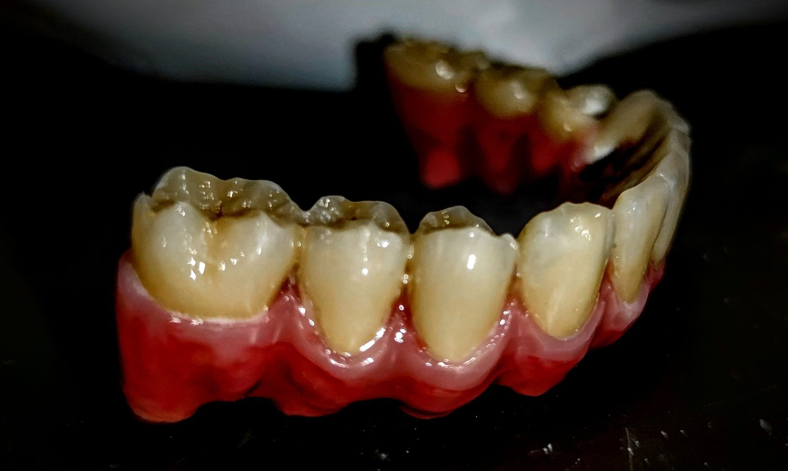

Zircone · Implant
Bridge complet transvissé — full zircone
Bridge complet transvissé sur armature métallique : couronnes full zircone et gencive en composite stratifié. Mimétisme d'une dentition mature — usure occlusale, colorations et récessions.